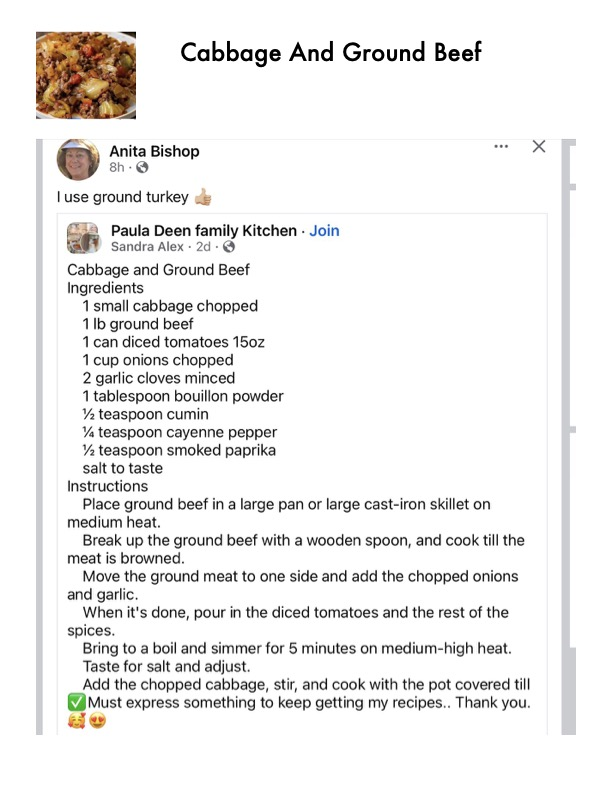

Cabbage And Ground Beef

Original cookbook page 677
Ingredients
- 1 small cabbage chopped
- 1 lb ground beef
- 1 can diced tomatoes 1502
- 1 cup onions chopped
- 2 garlic cloves minced
- 1 tablespoon bouillon powder
- Y% teaspoon cumin
- Ya teaspoon cayenne pepper
- YY teaspoon smoked paprika
- salt to taste
Instructions
- Place ground beef in a large pan or large cast-iron sk medium heat. Break up the ground beef with a wooden spoon, and meat is browned. Move the ground meat to one side and add the chop, and garlic. When it's done, pour in the diced tomatoes and the r spices. Bring to a boil and simmer for 5 minutes on medium- Taste for salt and adjust. Add the chopped cabbage, stir, and cook with the po @ Must express something to keep getting my recipes.
Recipe #677 from collection